BASE KEEP
The Keep · The Diamond
Fun tape · not news
The X
MLB memes and shitposts pulled from X. Pictures when the wire carries them.
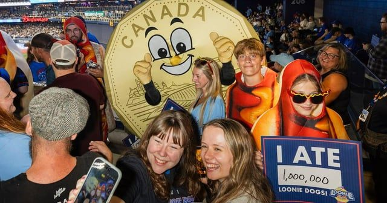
RedditBlue Jays fans have officially eaten one million $1 hot dogs this season
submitted by /u/charger03 [link] [comments]
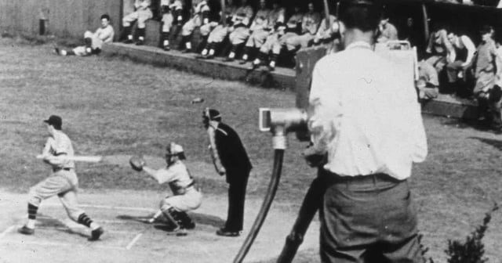
Reddit87 Years Ago Today The First MLB Game Aired On TV
On August 26, 1939, the first televised Major League Baseball game is broadcast on station W2XBS, the station that was to become WNBC-TV. An
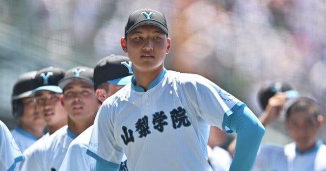
RedditHaruki Komoda, a two-way player from Yamanashi Gakuin H.S in Japan, has attracted attention from more than 20 MLB teams. However, he wants to play in NPB first and has turned down
submitted by /u/ogasawarabaseball [link] [comments]
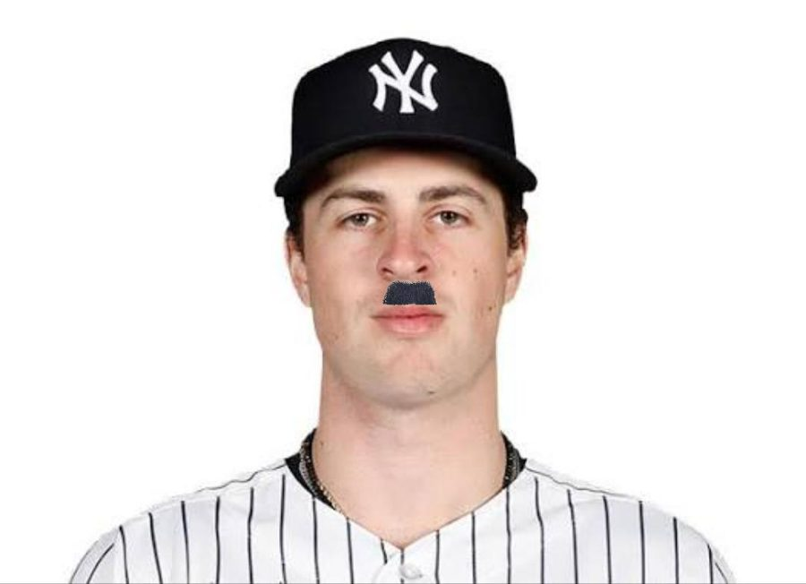
RedditDo you think Cam Shitler will win the AL Cy Young this year?
submitted by /u/SociopathicRascal [link] [comments]
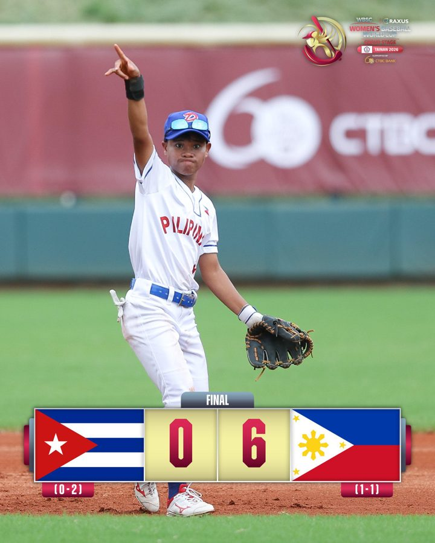
Reddit🇵🇭The Philippines earned their first-ever win in Women’s Baseball World Cup history!
submitted by /u/ogasawarabaseball [link] [comments]
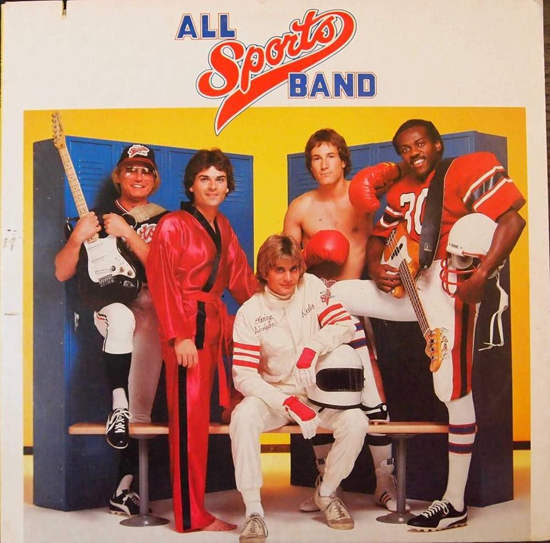
RedditJust curious… can anybody here in this subreddit possibly get this band to play for my 10yo son’s little league baseball game tournament for a cheap price at all? Thanks! 😊 👍
submitted by /u/bigguys45s [link] [comments]
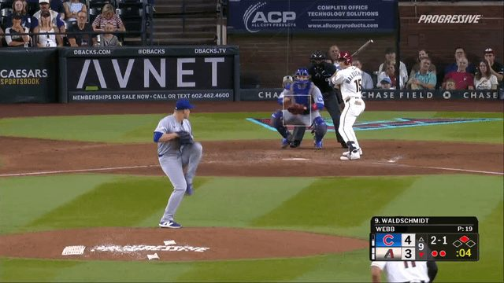
Reddit[Highlight] Ryan Waldschmidt wins it in Arizona!
submitted by /u/MLBOfficial [link] [comments]
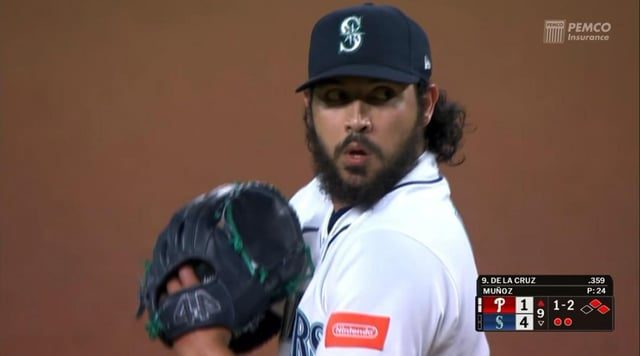
RedditAndres Munoz gets the save against the Phillies to clinch the series win!
submitted by /u/jmike1256 [link] [comments]
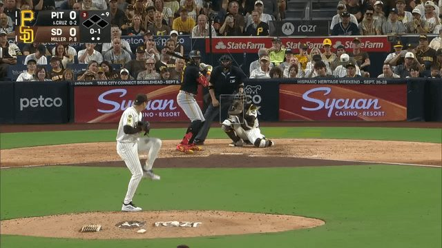
Reddit[Highlight] Oneil Cruz lines a go-ahead home run 111.8 MPH off the bat!
submitted by /u/MLBOfficial [link] [comments]
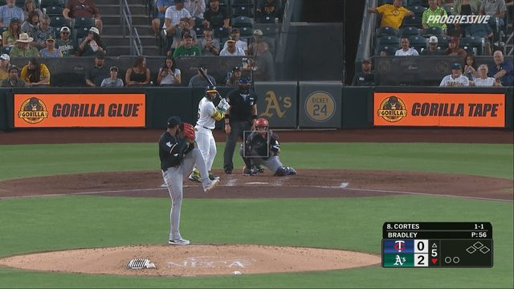
Reddit[Highlight] All 9 pitches from the first immaculate inning in Twins history, thrown by Taj Bradley!
submitted by /u/MLBOfficial [link] [comments]
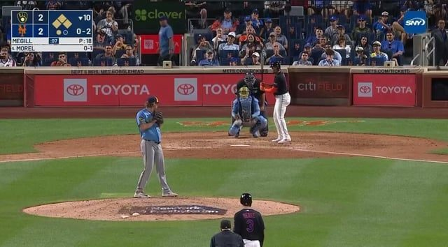
RedditMets walks off the Brewers on third baseman’s throwing error in the 10th inning!
submitted by /u/jmike1256 [link] [comments]
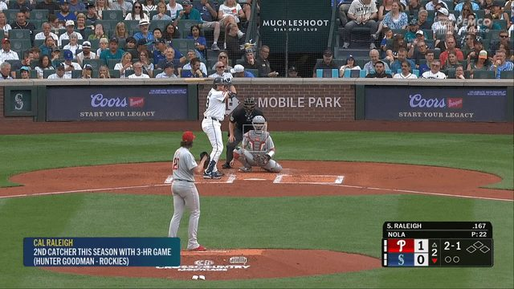
RedditCal Raleigh crushes his 4th Home Run of the series to tie it 1-1 in the 2nd
submitted by /u/sportsandthesorts [link] [comments]
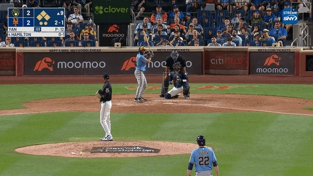
Reddit[Highlight] Francisco Lindor snags what would have been a go-ahead hit for the third out
submitted by /u/MythicSoul115 [link] [comments]
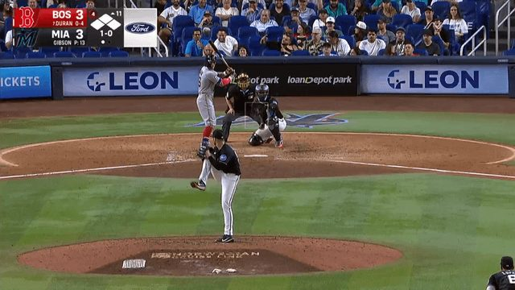
Reddit[Highlight] Jarren Duran GRAND SLAM in the 11th inning!
submitted by /u/MLBOfficial [link] [comments]
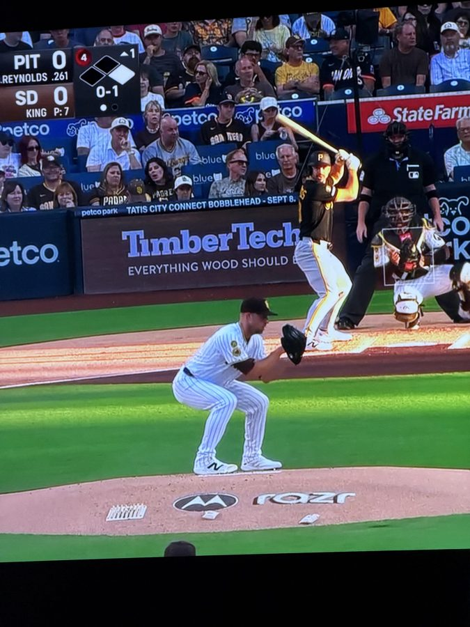
RedditIs this guy bouncing on Casper every pitch? What the fuck is this stupid ass windup/dook drop?
“King” R*tard submitted by /u/DoubleQuarterPoundin [link] [comments]
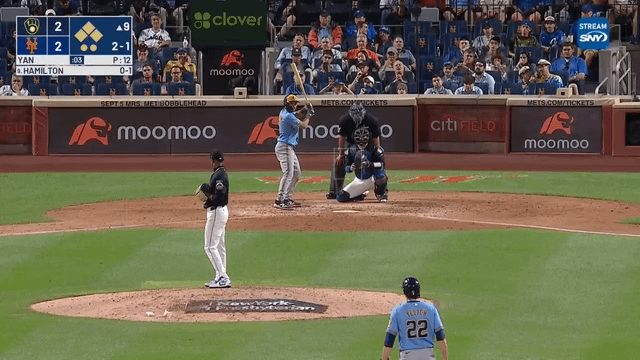
Reddit[Lowlight] The SNY broadcast cuts out abruptly right as Francisco Lindor snags what would have been a go-ahead base hit
submitted by /u/MythicSoul115 [link] [comments]
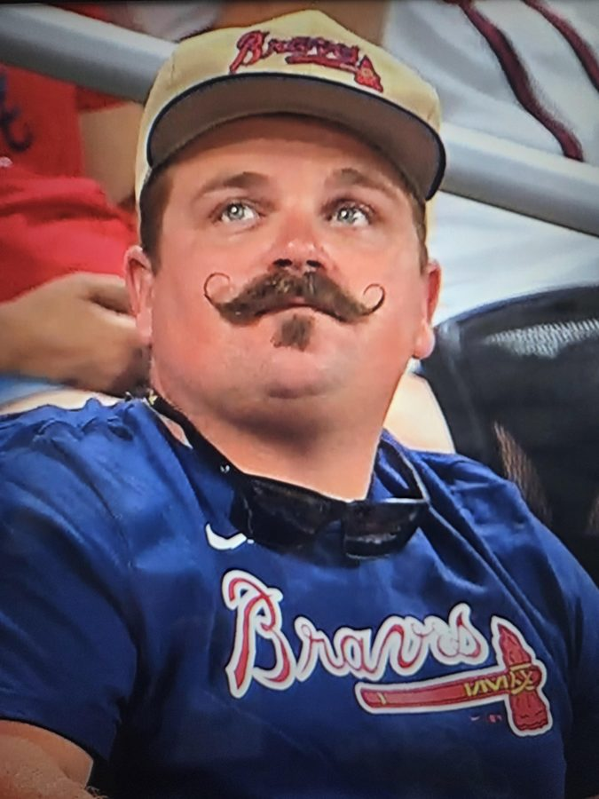
RedditI saw this man on tv at a baseball game with your wife and kids
submitted by /u/youarefartnews [link] [comments]
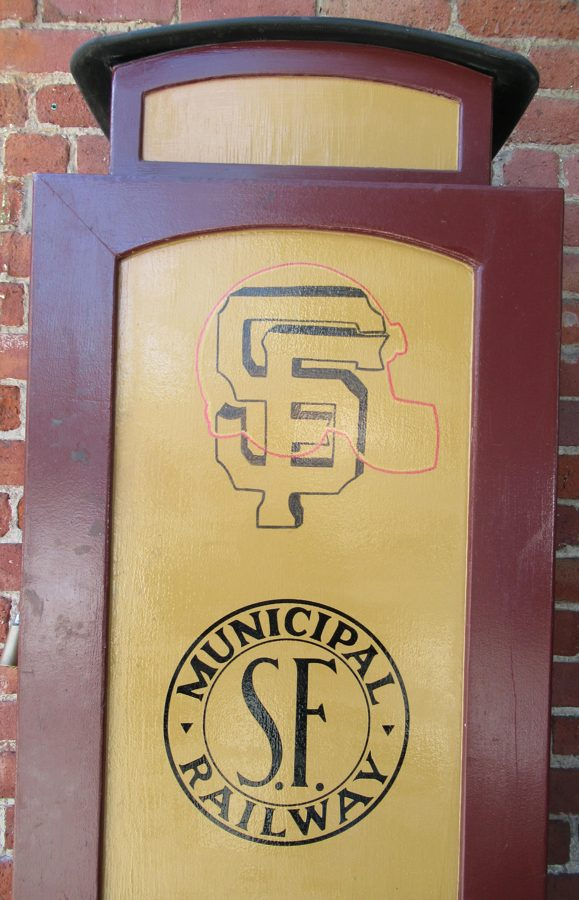
RedditWhy Do the Giants Own a Railway?
submitted by /u/DannyCamp2 [link] [comments]
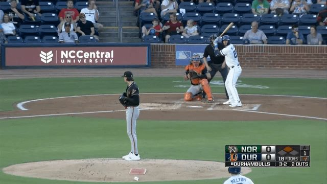
RedditRehabbing Orioles 3B Blaze Alexander makes an unusual tag in his first inning of professional baseball since breaking his left hand on July 12th
submitted by /u/Rockguy21 [link] [comments]
![[Jeff Passan] The Dodgers' local-TV deal is a profound competitive advantage. Because of a bankruptcy-court ruling, the team will shield more than $1.3 billion from rev sharing ove](../img/x-tape/baseball/61ea0e2dc7624fe5.jpg) Reddit
Reddit[Jeff Passan] The Dodgers' local-TV deal is a profound competitive advantage. Because of a bankruptcy-court ruling, the team will shield more than $1.3 billion from rev sharing ove
submitted by /u/f0urxio [link] [comments]
 Reddit
RedditRIP to a famous Nazi sympathizer
submitted by /u/YodaForceGhost [link] [comments]
 Reddit
RedditIt’s Max Mucy’s birthday today
submitted by /u/Revolutionary_Use227 [link] [comments]
 Reddit
RedditGive him the Dodgers back
submitted by /u/Ok_Assumption_5366 [link] [comments]
 Reddit
RedditCal Raleigh has a 2.482 OPS since PCA slapped his ass
submitted by /u/PopeSouthpaw [link] [comments]
 Reddit
RedditMets send out email cancelling much-awaited Snoopy Plush night. Mrs. Met fleshlights with interchangeable anal sleeve will be given away instead
submitted by /u/guhguhguhguhguhH [link] [comments]
 Reddit
RedditOutjerked by the main sub again
Mods can we please have this as a flair? submitted by /u/Green-Cricket-8525 [link] [comments]
 Reddit
RedditA man who has devoted his career to baseball shares his wisdom.
submitted by /u/junklardass [link] [comments]
 Reddit
RedditDodgers sign Freddie Freeman’s son Charlie to replace Tucker in RF
Does anyone know the details of the new contract? submitted by /u/Present_State546 [link] [comments]
 Reddit
RedditJust a reminder that this dude never hit a homerun at his home ballpark this year.
submitted by /u/zeke_maximus11 [link] [comments]
 Reddit
RedditWe NEED this
submitted by /u/Sleep_Is_A_scam2099 [link] [comments]
 Reddit
RedditOutjerked by mariners again
submitted by /u/Sleep_Is_A_scam2099 [link] [comments]
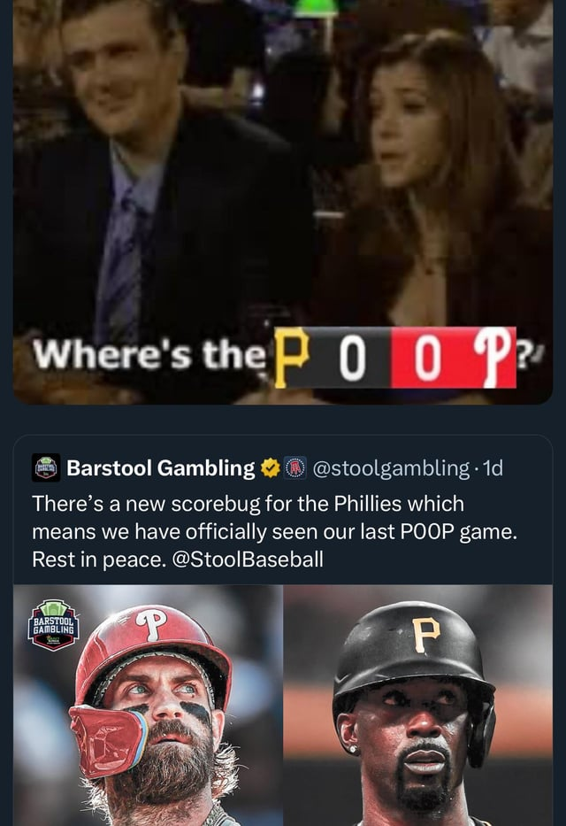
RedditR.I.P. POOP
submitted by /u/GotNoBody4 [link] [comments]